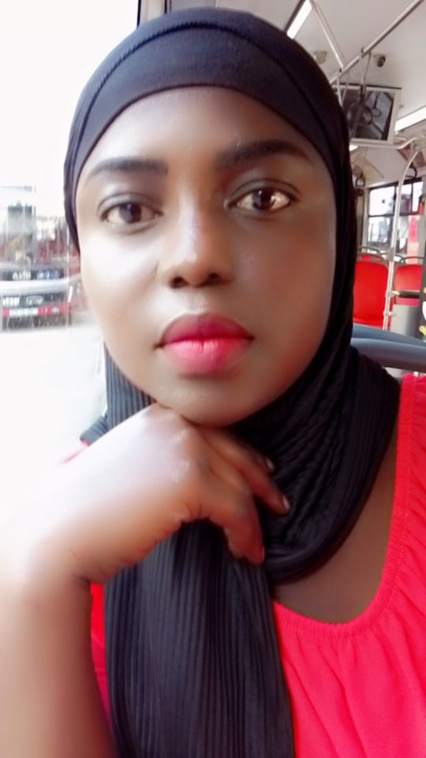

Khady Mame Diarra SENE
Géomaticienne | Ingénieur en Télédétection et SIG
A propos de moi
Actuellement en formation en Systèmes d'Information Géographique (SIG) et Télédétection au CRASTE-LF affilié à l'ONU, je suis passionnée par les sciences spatiales. Consciente de l'importance de l'utilisation des produits d'observation de la Terre, mon objectif est d'évoluer dans un environnement professionnel axé sur les technologies de l'information géographique . Je souhaite mettre en pratique les connaissances acquises au cours de mes années de formation en sciences spatiales , qui représentent pour moi un second monde et une véritable passion.
